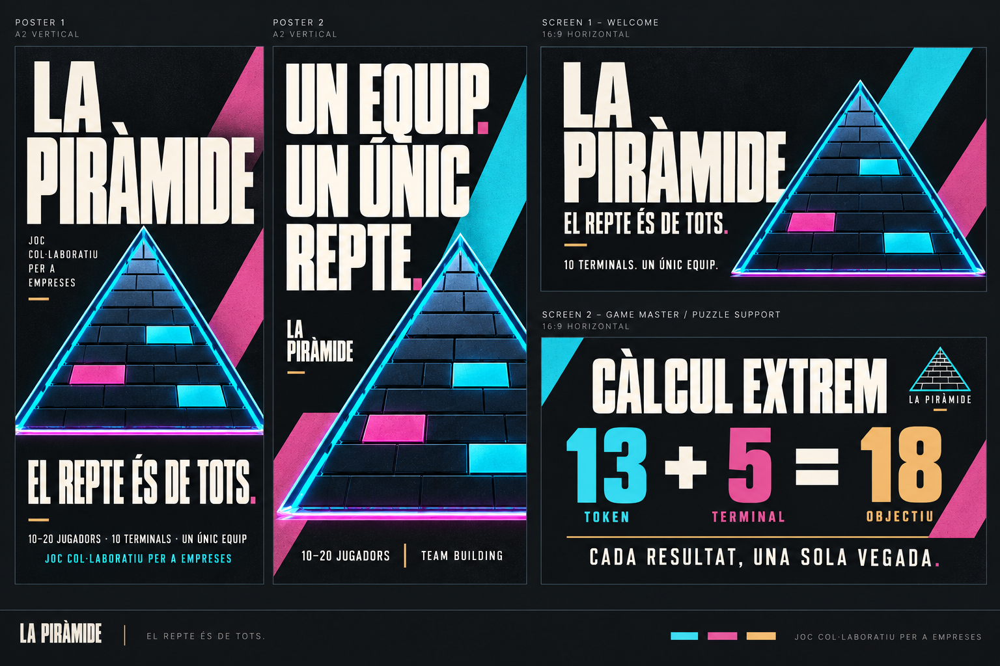
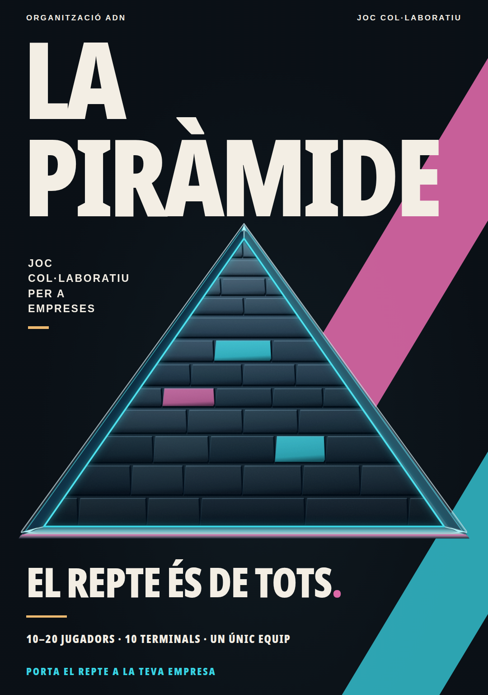
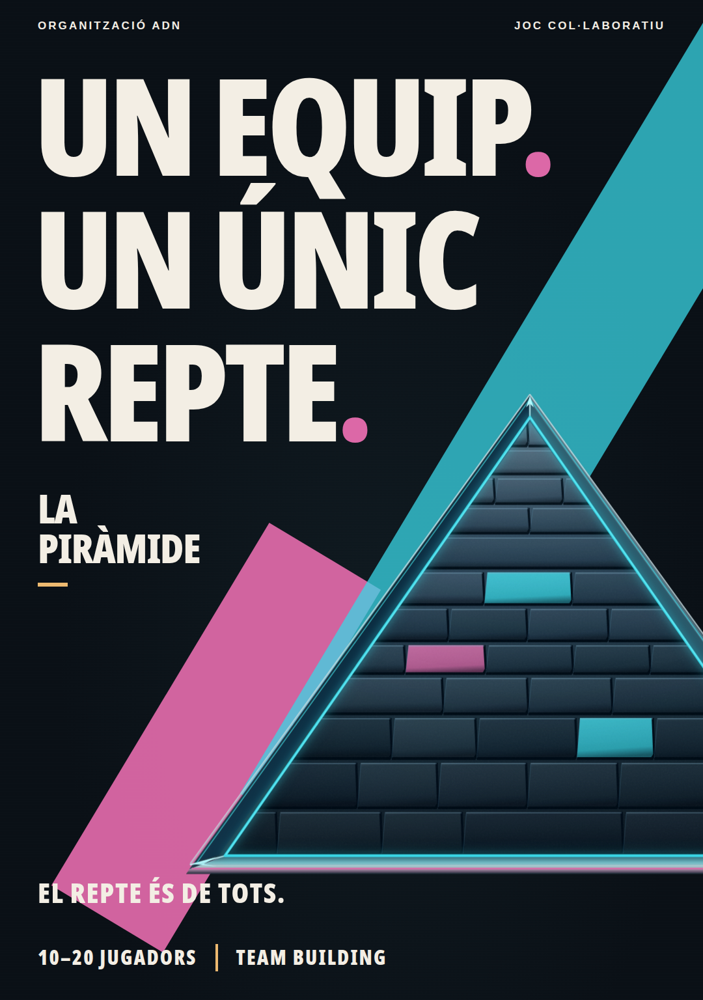
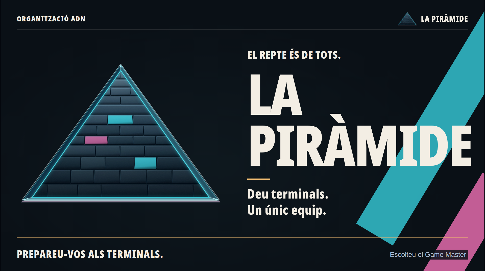
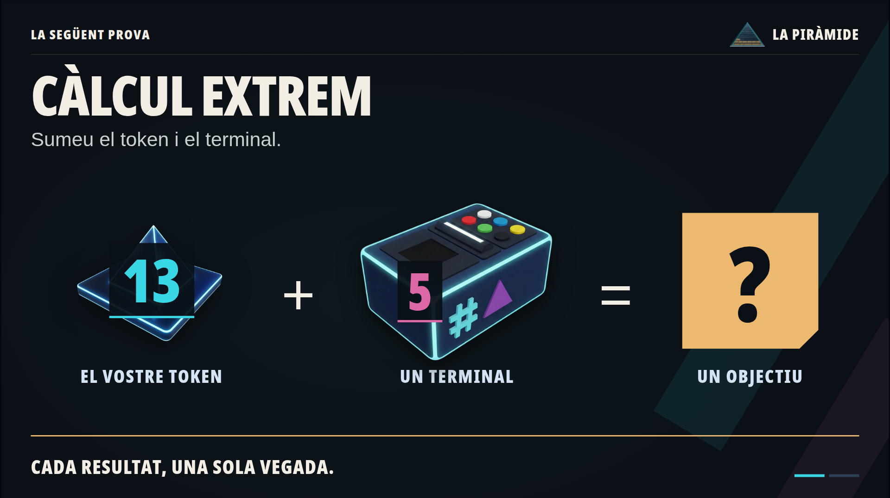
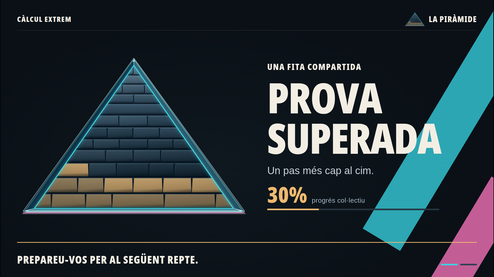
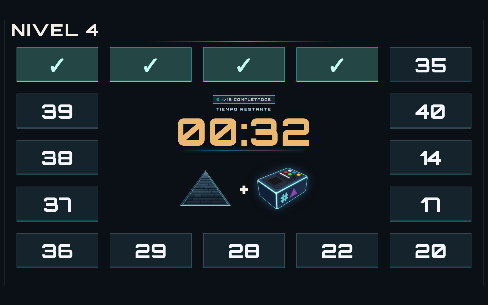

Més presència i energia de joc: fons grafit, titulars compactes, diagonals cian i magenta i una piràmide formada per aportacions. La mateixa identitat al cartell i a la pantalla.





Canvia entre benvinguda, suport del GM, compte enrere, prova superada, progrés, final i el joc de Sumes. Els controls i percentatges són de mostra.




Una mateixa marca
Nom, emblema, titulars compactes i colors compartits entre màrqueting, presentacions i joc.
Pensat per a la sala
Exemples grans i poc text. El GM explica; el grafisme acompanya i es redueix durant els puzles.
Es pot implementar
Pòsters i pantalles construïts amb HTML, CSS i el SVG editable. Blocs, colors i progrés es poden controlar des del joc.